1. Распределения
Г. Мороз
1. Распределения в R
В R встроено какое-то количество известных распределений. Все они представлены четырьмя функциями:
d...(функция плотности, probability density function),p...(функция распределения, cumulative distribution function) — интеграл площади под кривой от начала до указанной квантилиq...(обратная функции распределения, inverse cumulative distribution function) — значение p-той квантили распределения- и
r...(рандомные числа из заданного распределения).
Рассмотрим все это на примере нормального распределения.
data_frame(x = 1:100,
PDF = dnorm(x = x, mean = 50, sd = 10)) %>%
ggplot(aes(x, PDF))+
geom_point()+
labs(title = "PDF нормального распределения (μ = 50, sd = 10)")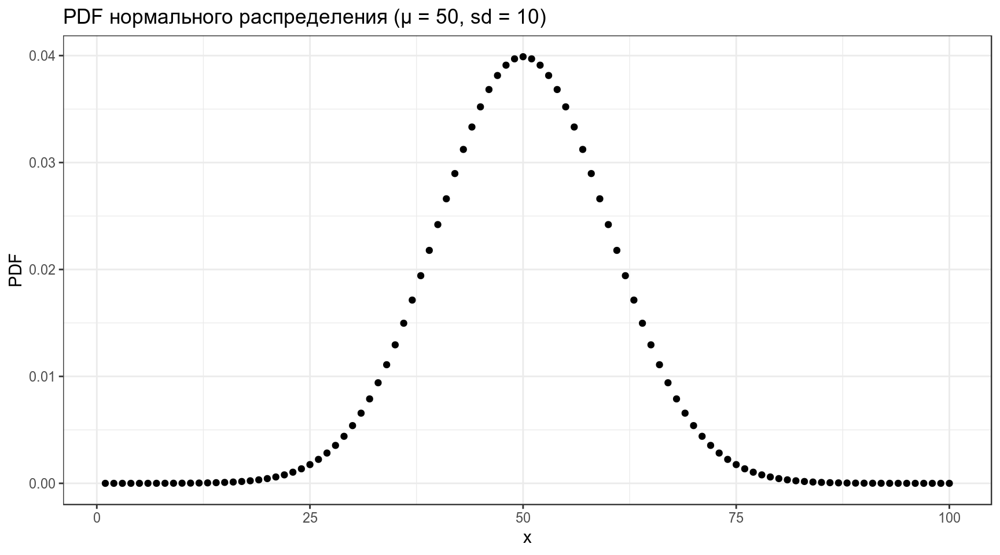
Какое количество данных лежит в промежутке от 0 до 30?
[1] 0.02275013data_frame(x = 1:100,
CDF = pnorm(x, mean = 50, sd = 10)) %>%
ggplot(aes(x, CDF))+
geom_point()+
labs(title = "CDF нормального распределения (μ = 50, sd = 10)")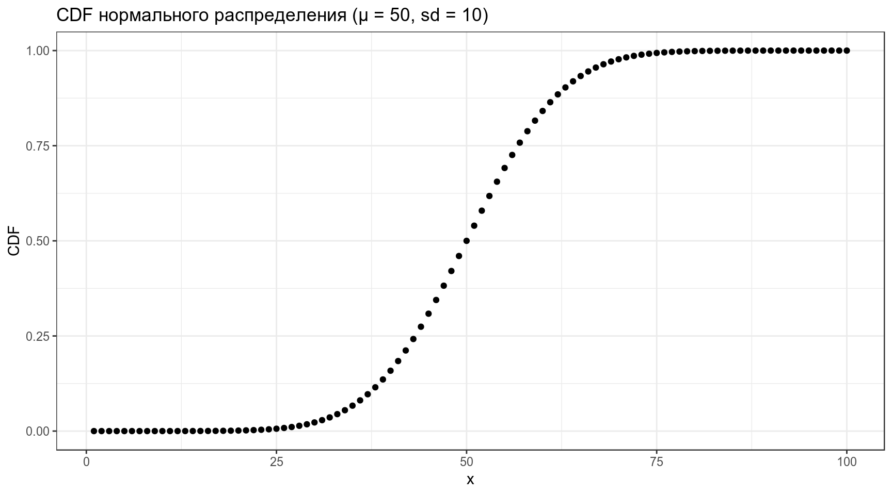
Какое значение соответствует 40-ой квантили?
[1] 47.46653data_frame(quantiles = seq(0, 1, by = 0.01),
value = qnorm(quantiles, mean = 50, sd = 10)) %>%
ggplot(aes(quantiles, value))+
geom_point()+
labs(title = "inverse CDF нормального распределения (μ = 50, sd = 10)")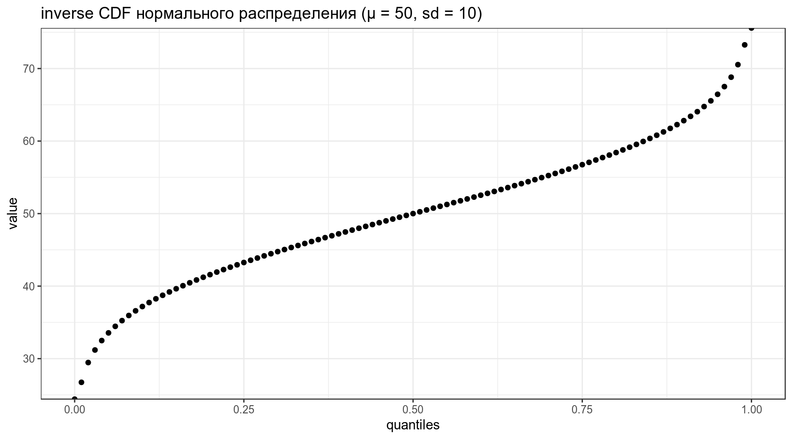
Siri, Алиса, Дорогой R, сгенерируй мне 100 наблюдений из нормального распределения со средним 50 и стандартным отклонением 10.
data_frame(sample = rnorm(100, mean = 50, sd = 10)) %>%
ggplot(aes(sample))+
geom_histogram()+
labs(title = "выборка нормально распределенных чисел (μ = 50, sd = 10)")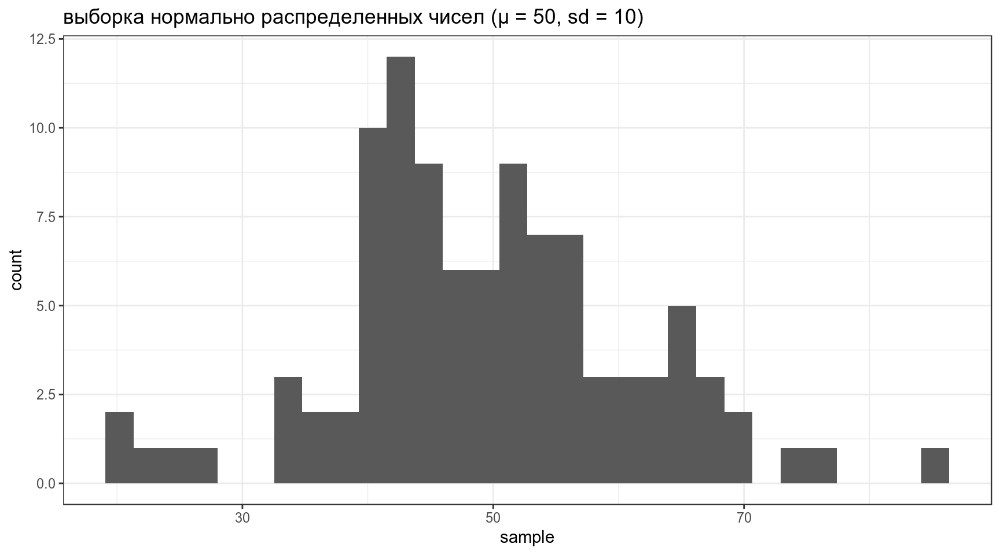
Если не использовать set.seed(), то результат работы рандомизатора нельзя будет повторить.
1.1
Какое значение имеет 25% квантиль нормального распределения со средним в 20 и стандартным отклонением 90.
1.2
Посчитайте z-score для 97% квантили нормально распределенных данных.
2. Дискретные распределения
2.1 Биномиальное распределение
Биномиальное распределение — распределение количетсва успехов эксперементов Бернулли из n попыток с вероятностью успеха p.
\[P(k | n, p) = \frac{n!}{k!(n-k)!} \times p^k \times (1-p)^{n-k} = {n \choose k} \times p^k \times (1-p)^{n-k}\] \[ 0 \leq p \leq 1; n, k > 0\]
data_frame(x = 0:50,
density = dbinom(x = x, size = 50, prob = 0.16)) %>%
ggplot(aes(x, density))+
geom_point()+
geom_line()+
labs(title = "Биномиальное распределение p = 0.16, n = 50")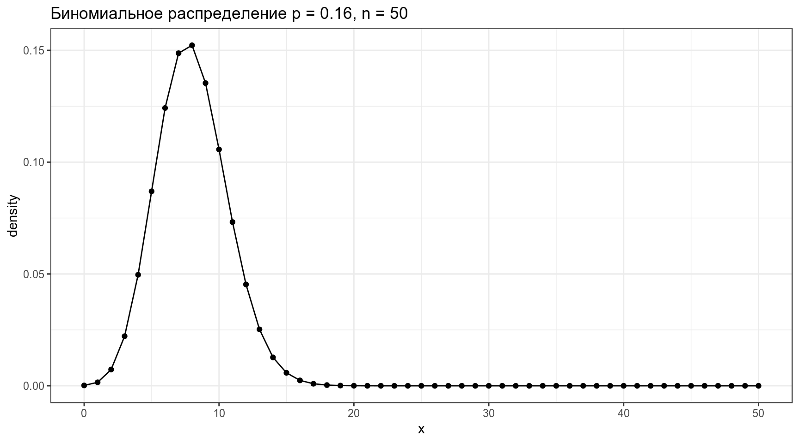
2.2 Геометрическое распределение
Геометрическое распределение — распределение количетсва эксперементов Бернулли с вероятностью успеха p до первого успеха.
\[P(k | p) = (1-p)^k\times p\] \[k\in\{1, 2, \dots\}\]
data_frame(x = 0:50,
density = dgeom(x = x, prob = 0.16)) %>%
ggplot(aes(x, density))+
geom_point()+
geom_line()+
labs(title = "Геометрическое распределение p = 0.16, n = 50")
2.3 Распределение Пуасона
Распределение Пуассона — распределение числа событий, произошедших за фиксированное время при условии, что данные события происходят с некоторой фиксированной средней интенсивностью (\(\lambda\)) и независимы друг от друга.
\[P(Y = k) = \frac{\lambda^k}{k!} \times e^{-\lambda}\] \[k\in\{1, 2, \dots\}, \lambda \in \{0, -\infty\}\]
data_frame(x = 0:50,
density = dpois(x = x, lambda = 5)) %>%
ggplot(aes(x, density))+
geom_point()+
geom_line()+
labs(title = "Распределение Пуасона с мат. ожиданием λ = 5")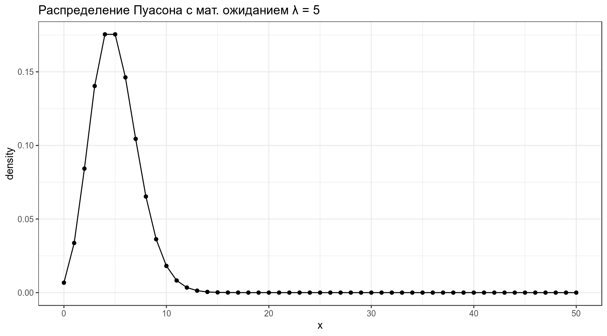
2.3.1
Используя вот этот датасет и функцию glm() с аргументом family=poisson, постройте регрессию, предсказывающую количество наград (num_awards), которые получат студенты на основе типа программы (prog) и оценки их экзамена по математике (math). Если записать датасет в переменную df, а модель в переменную model, следующий код должен делать следующий график:
df %>%
mutate(predictions = predict(model, type = "response")) %>%
ggplot(aes(x = math, y = predictions, color = prog)) +
geom_point(aes(y = num_awards), position=position_jitter(h=.1)) +
geom_line() +
labs(x = "math score", y = "expected number of awards",
caption = "data from https://stats.idre.ucla.edu/r/dae/poisson-regression/")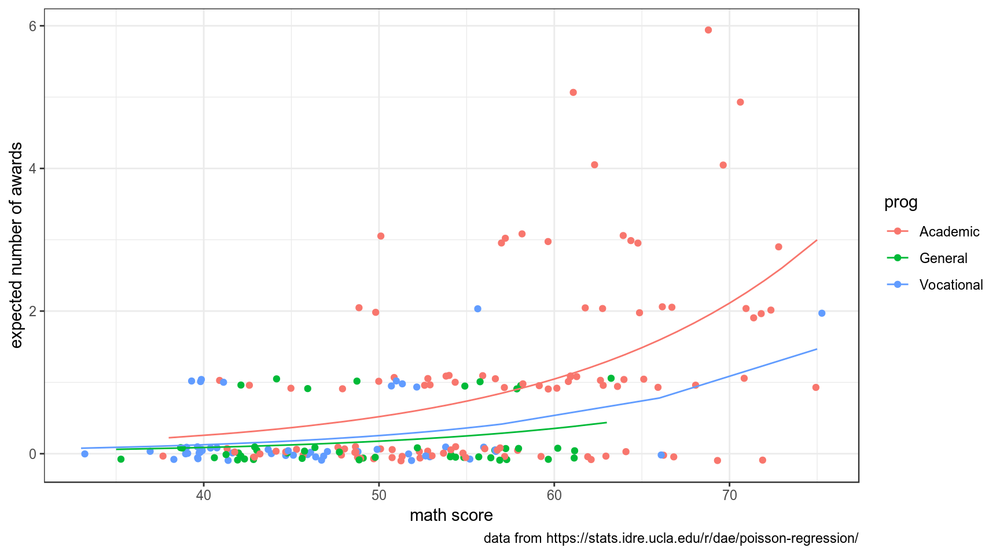
2.4 Мультиномиальное распределение
Мультиномиальное распределение — обобщение биноимального эксперимента на случай n независимых испытаний с k исходами с вероятностями каждого исхода \(p_1, p_2, \dots p_k\).
\[P(x_1, \dots, x_k | n, p_1, \dots p_k) = \frac{n!}{x_1!\times\dots\times x_k!} \times p_1^{x_1}\times\dots\times p_2^{x_k}\] \[ x_i \in \{0, n\}, i \in \{1, k\}, \sum_{i=1}^kx_i = n \]
Если у нас есть три взаимисключающих исхода V1, V2 и V3 с верятностями \(p_1 = 0.4, p_2 = 0.35\) и \(p_3 = 0.25\), какова вероятность получить V1 7 раз, V2 3 раза и V3 2 раза?
[1] 0.03477197А как выглядит распределение?
library(ggtern)
rep(1:10, 3) %>%
combn(., 3) %>%
t() %>%
as.data.frame() %>%
rowwise() %>%
mutate(multinomial = dmultinom(c(V1, V2, V3), prob = c(0.6, 0.3, 0.1))) %>%
ggplot(aes(x = V1, y = V2, z = V3, color = multinomial)) +
coord_tern()+
geom_point(size = 0.3)+
scale_color_continuous(low = "grey90", high = "black") +
scale_L_continuous(labels = c("", "2", "4", "6", "8", "10"))+
scale_R_continuous(labels = c("", "2", "4", "6", "8", "10"))+
scale_T_continuous(labels = c("", "2", "4", "6", "8", "10"))+
labs(title = "Мультиномиальное распределение для трех исходов (0.6, 0.3, 0.1)")+
theme_bw()
3. Непрерывные распределения
3.1 Нормальное распределение
\[P(x) = \frac{1}{\sigma\sqrt{2\pi}}\times e^{-\frac{\left(x-\mu\right)^2}{2\sigma^2}}\]
\[\mu \in \mathbb{R}; \sigma^2 > 0\]
data_frame(x = 1:100,
PDF = dnorm(x = x, mean = 50, sd = 10)) %>%
ggplot(aes(x, PDF))+
geom_point()+
geom_line()+
labs(title = "PDF нормального распределения (μ = 50, sd = 10)")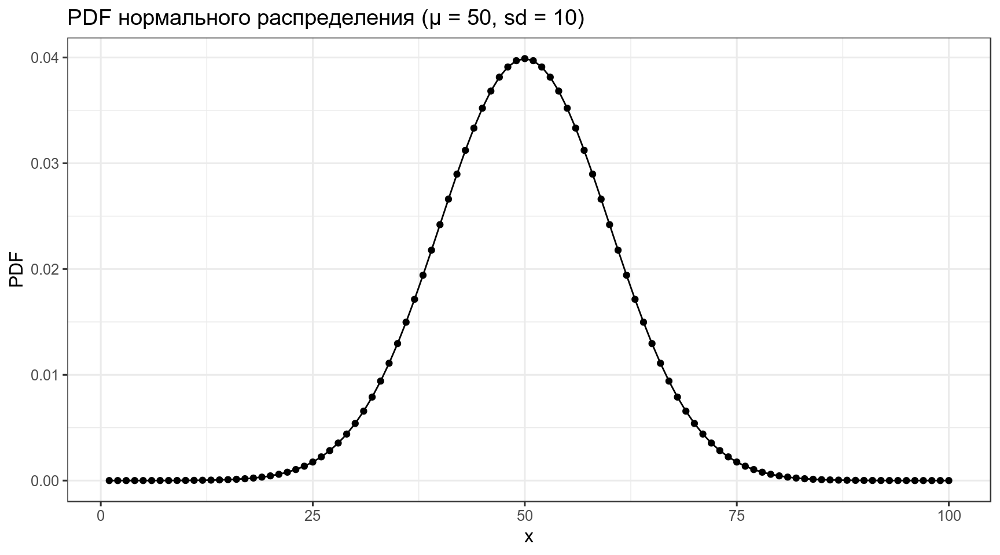
3.2 Логнормальное распределение
\[P(x) = \frac{1}{\sqrt{x\sigma2\pi}}\times e^{-\frac{\left(\ln(x)-\mu\right)^2}{2\sigma^2}}\]
\[\mu \in \mathbb{R}; \sigma^2 > 0\]
data_frame(x = 1:100,
PDF = dlnorm(x = x, meanlog = 3, sdlog = 0.5)) %>%
ggplot(aes(x, PDF))+
geom_point()+
geom_line()+
labs(title = "PDF логнормального распределения (μ = 4, sd = 0.5)")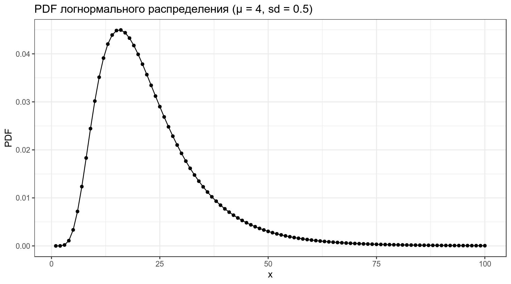
3.3 Экспоненциальное распределение
\[P(x)= \lambda \times e^{-\lambda x}\] \[\lambda > 0\]
data_frame(x = 1:20,
PDF = dexp(x = x, rate = 0.5)) %>%
ggplot(aes(x, PDF))+
geom_point()+
geom_line()+
labs(title = "PDF экспоненциального распредления с коэффициентом интенсивности 0.5")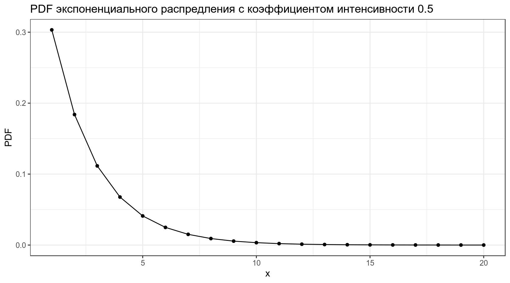
4. Conjugate priors
В байесовском подоходе статистический вывод описывается формулой Байеса
\[P(θ|Data) = \frac{P(Data|θ)\times P(θ)}{P(Data)}\]
- \(P(Data|θ)\) — функция правдоподобия (likelihood)
- \(P(θ)\) — априорная вероятность (prior)
- \(P(Data)\) — данные
- \(P(θ|Data)\) — апостериорная вероятность (posterior)
Мы вернемся к формуле Байеса и байесовскому подходу в следующих лекциях, а сейчас важно обсудить распределения априорной и апостериорной вероятностей. Оба эти распределения — распределения вероятностей.
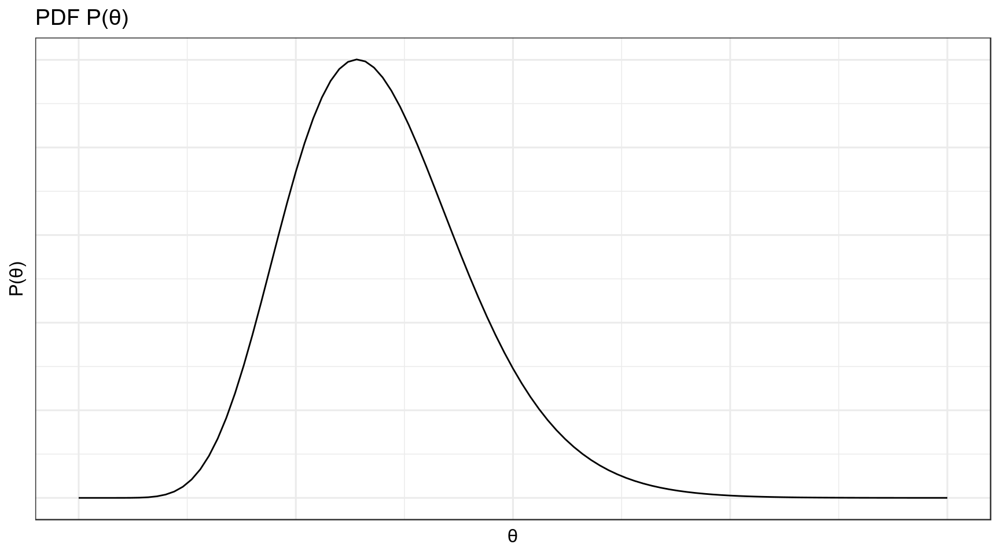
Если у нас есть некоторые данные с функцией правдоподобия P(Data|θ), а априорное и апостериорное распределения θ относятся к одному семейству распределений, то данное семейство распредлений называется сопряжённым априорным распределением к функции правдоподобия P(Data|θ) (conjugate prior).
4.1 Бета распределение
\[P(x; α, β) = \frac{x^{α-1}\times (1-x)^{β-1}}{B(α, β)}; 0 \leq x \leq 1; α, β > 0\]
Бета функция:
\[Β(α, β) = \frac{Γ(α)\times Γ(β)}{Γ(α+β)} = \frac{(α-1)!(β-1)!}{(α+β-1)!} \]
data_frame(x = seq(0, 1, length.out = 51),
density = dbeta(x = x, shape1 = 8, shape2 = 42)) %>%
ggplot(aes(x, density))+
geom_point()+
geom_line()+
labs(title = "Бета распределение α = 8, β = 42")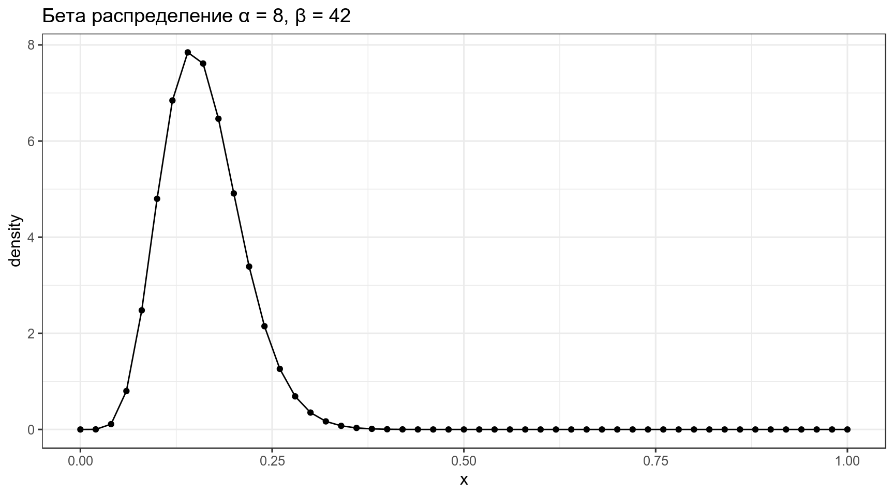
Можно поиграть с разными параметрами:
\[\mu = \frac{\alpha}{\alpha+\beta}\]
\[\sigma = \frac{\alpha\times\beta}{(\alpha+\beta)^2\times(\alpha+\beta+1)}\]
4.2 Нормальное распределение
5. Вероятность vs. функция правдободобия
Предположим что распределение количества согласных в языках мира можно описать нормальным распределением со средним 22 и стандартным отклонением 6:
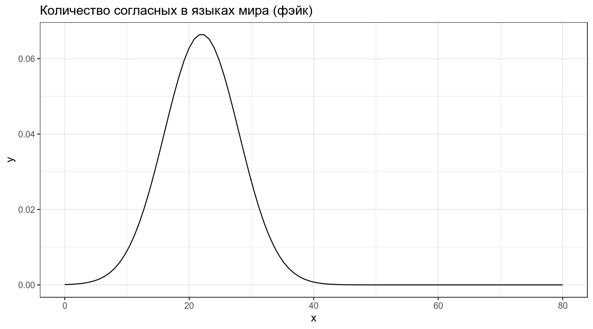
Тогда вероятность того, что в выбранных произвольно языках окажется от 23 до 32 согласных, равна интегралу нормального распределения в указанном промежутке:
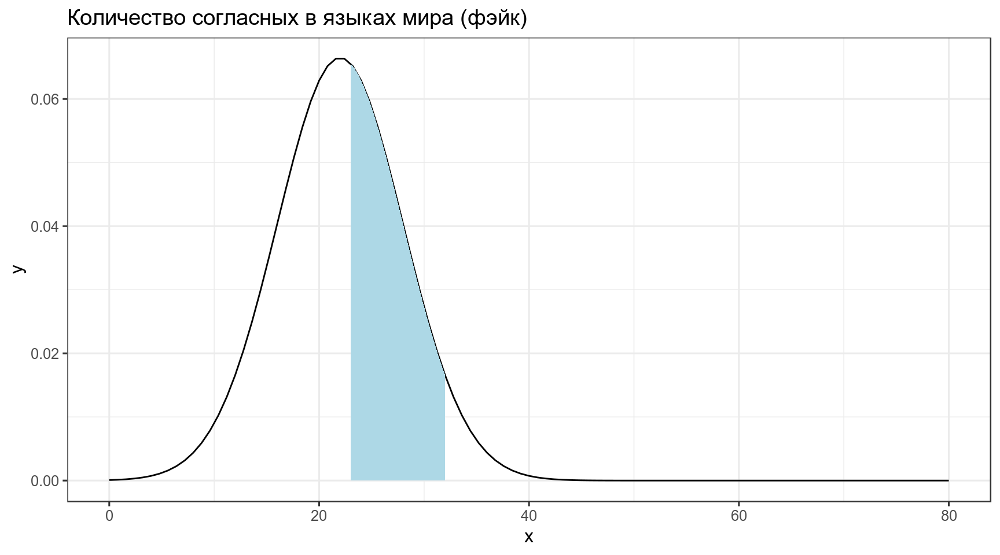
\[P\left(X \in (23,\, 32) | X \sim \mathcal{N}(\mu = 22,\, \sigma^{2}=6)\right) = ...\]
[1] 0.3860258Когда мы говорим про функцию правдоподобия, мы нашли еще один язык в котором оказалось 33 согласных, и нас интересует, насколько правдоподобна функция нормального распределения со средним 22 и стандартным отклонением 6 при значении переменной 33. Это значение равно функции плотности:
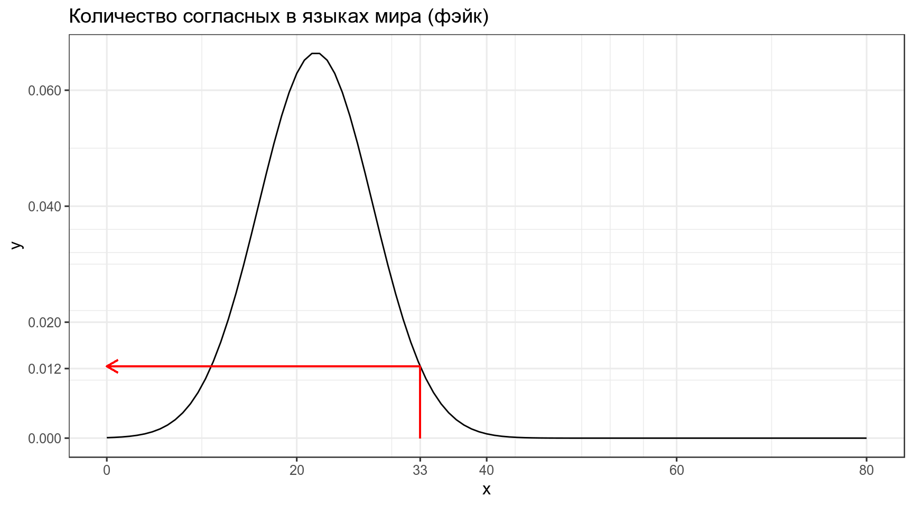
\[L\left(X \sim \mathcal{N}(\mu = 22,\, \sigma^{2}=6)|x = 33\right) = ...\]
[1] 0.01238519В результате мы можем пострить график, на котором будет правдоподобие моделей с разными средними и фиксированным стандартным отклонением.
data_frame(x = 0:80) %>%
ggplot(aes(x)) +
stat_function(fun = function(x) dnorm(33, x, 6))+
scale_x_continuous(breaks = c(0:4*20, 33))+
labs(x = TeX("$\\mu$"),
y = TeX("$L(N(\\mu,\\, \\sigma^{2}=6)|x = 33))$"),
title = "Насколько правдоподобны модели с разными μ, если мы наблюдаем значение 33?")
А что если у нас не одно наблюдение, а несколько? Например, мы наблюдаем языки с 33 и 26 согласными? События независимы друг от друга, значит, мы можем перемножить получаемые вероятности.
data_frame(x = 0:80) %>%
ggplot(aes(x)) +
stat_function(fun = function(x) dnorm(33, x, 6)*dnorm(26, x, 6))+
scale_x_continuous(breaks = c(0:4*20, 33, 26))+
labs(x = TeX("$\\mu$"),
y = TeX("$L(N(\\mu,\\, \\sigma^{2}=6)|x = 33))$"),
title = "Насколько правдоподобны модели с разными μ, если мы наблюдаем значения 26 и 33?")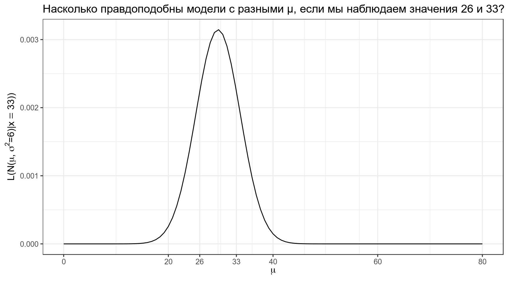
Самое важное:
- вероятность — P(data|distribution)
- правдоподобие — L(distribution|data)
Интеграл распределения вероятностей равен 1. Интеграл правдоподобия может быть не равен 1.
5.1
Посчитайте значение правдоподобия модели \(\mathcal{N}(\mu = 910,\, \sigma^{2}=150)\) для встроенного датасета Nile.